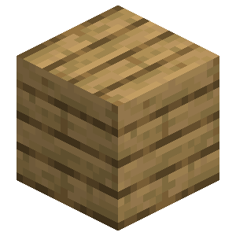

About
The rope ladder is a decorative block that can be hung from blocks!
Crafting
The rope ladder can be crafted with the appropriate type of wood and some string:




Expansion
Planter boxes of different types won't connect. Planter boxes need to share the same wood type to expand.
Sapling Behavior
When a sapling grows into a tree the planter box underneath will not be converted to dirt.
Compatible Plants
All vanilla plants and most modded plants can grow in planter boxes.
Farming
Planter boxes that are made from overworld wood allow overworld plants to thrive in them! Nether wood planter boxes on the other hand only support nether plants. These plants will grow in the planter box the same way that they would if they were planted on wet farmland or soul soil!
Planter Box

| Renewable | Yes (Crafting) |
| Stackable | Yes (64) |
| Tool | Any tool, but the axe is the quickest! |
| Blast Resistance | 2.5 |
| Hardness | 2.5 |
| Luminous | No |
| Transparent | No |
| Catches fire from lava | Yes |